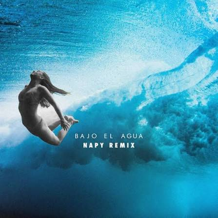
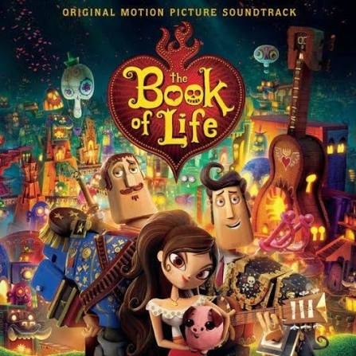

Como dije, aquí pondré las canciones que te he dedicado y las que tú me dedicaste. También podrás ver la letra solo hundiendo "Lyric". Espero que te guste este apartado. También te voy a dedicar canciones que, en estas últimas semanas, he querido dedicarte. Gracias por todo, Andy, y espero que disfrutes de las canciones. Te amo.
Como primera canción, pondré la canción que tú me dedicaste a mí, que se llama "Serotonina", de Humbe. Esta canción, cuando me la dedicaste, me hizo sentir en lo alto de este mundo. Esta canción es tan especial para mí que, con tan solo escucharla, me hace recordar a ti y se me hace olvidar todos los problemas que tengo. Gracias por dedicarme esta obra maestra y hacerme feliz cada vez que la escucho. Te amo mucho.

Serotonia
Humbe
Serotonina es lo que liberas en mí
El agua en mis ojitos cuando te sentí
Después de un tiempo, me dan ganas de seguir
A diario encuentro mi razón para vivir
Con solo verte sonreír así
Es la importancia que a veces falta sentir
Cuando la soledad toma el control de mí
Amor se necesita para ser feliz
Pero no de todo eso que hablan en el cine
Es diferente para mí, porque la vida es un chiste
Si no empiezo por amarme a mí, no tendré paz
Un viaje a la nada, quizás
Un crimen que puede costar, se puede evitar
Si me tomo el tiempo y me vuelvo a encontrar, me vuelvo a escuchar
No me va a importar lo que pase al final
Serotonina es lo que liberas en mí
El agua en mis ojitos cuando te sentí
Después de un tiempo, me dan ganas de seguir
A diario encuentro mi razón para vivir
Con solo verte sonreír así
Y todo cambió, no me siento triste
Ya son menos los días grises
Haciendo con calma lo que mi corazón me dicte
Yo sé que todo va a estar bien
El amor que te doy no tiene condición ni límites
Nunca pensé que todo esto era así, que empieza por mí
Por abrazarme me premian, tan sencillo si lo piensan
Lo que la vida me quiera mandar
No voy a negar el sentimiento y la oportunidad
Crecer y cambiar, ya no temerle a opinar
Aunque se pueda acabar el tiempo contigo, nunca está de más
Serotonina es lo que liberas en mí
El agua en mis ojitos cuando te sentí
Después de un tiempo, me dan ganas de seguir
A diario encuentro mi razón para vivir
Con solo verte sonreír así
Esta fue una de las primeras canciones que te dediqué, y con mucha pena hasta te la canté jajaja (no le gustó cómo la canté), y fue "Fuentes de Ortiz", de Ed Maverick. Y te la dediqué principalmente porque habla de lo que siento por ti, de llegar al tal punto de que moriría por ti, y expresaba que cada noche, en serio, cada noche —la neta, todo el día—, pero más por la noche, es donde más pensaba en ti. Cuando me asomaba al balcón y veía la noche, pensaba en ti con un profundo amor hacia ti, tanto que de mi mente nunca salías.

Fuentes de Ortiz
Ed Maverick
Ya dime si quieres estar conmigo
O si mejor me voy
Tus besos dicen que tú sí me quieres
Pero tus palabras, no
Y al chile, yo hasta moriría por ti
Pero dices que no
No eres directa, neta, ya me estás cansando
Sé concreta, por favor
Y en la noche, en que las estrellas salen
Yo pienso en ti, mi amor
¿Qué me hiciste? De mi cabeza, no sales
Y no lo digo por mamón
Si me dices para ti qué soy
No dudaré en hacerte tan feliz
Eres especial para mí
Dime por qué me haces sufrir
Yo te olvidaré desde las Fuentes de Ortiz
Soy inseguro cuando dices que me quieres
Porque creo que no
Como bebé, caigo, pero sí redondito
En tu trampa, amor
Ya dime si tú me quieres, por favor
Ya he sufrido y me he empedado tanto por tu amor
Y en la noche, en que las estrellas salen
Yo pienso en ti, mi amor
¿Qué me hiciste? De mi cabeza, no sales
Y no lo digo por mamón
Si me dices para ti qué soy
No dudaré en hacerte tan feliz
Eres especial para mí
Dime por qué me haces sufrir
Yo te olvidaré desde las Fuentes de Ortiz
Esta canción es muy especial para mí y una de mis favoritas, y fue una de las razones por las cuales te la dediqué. Además de que eres tú, semejante mujer, no mames. Y su nombre es "Eres", de Café Tacvba. Te la dediqué porque eres lo que más quiero en este mundo, lo primero al levantarme, mi primer pensamiento. Eres tan especial e importante para mí, Andy. Eres mi tiempo, mi salvación, esperanza y fe. Eres todo para mí. Y yo, ¿qué soy? Soy solo un tonto que te ama demasiado y alguien que por ti daría todo. Ese soy.

Eres
Café Tacvba
Eres
Lo que más quiero en este mundo, eso eres
Mi pensamiento más profundo, también eres
Tan solo dime lo que hago, aquí me tienes
Eres
Cuando despierto, lo primero, eso eres
Lo que a mi vida le hace falta si no vienes
Lo único precioso que en mi mente habita hoy
¿Qué más puedo decirte?
Tal vez puedo mentirte sin razón
Pero lo que hoy siento
Es que sin ti, estoy muerto, pues eres
Lo que más quiero en este mundo, eso eres
Eres
El tiempo que comparto, eso eres
Lo que la gente promete cuando se quiere
Mi salvación, mi esperanza y mi fe
Soy
El que quererte quiere como nadie, soy
El que te llevaría el sustento día a día, día a día
El que por ti daría la vida, ese soy
Aquí estoy a tu lado
Y espero aquí sentado hasta el final
No te has imaginado
Lo que por ti he esperado, pues eres
Lo que yo amo en este mundo, eso eres
Cada minuto en lo que pienso, eso eres
Lo que más cuido en este mundo, eso eres
Esta canción se llama "Ojos color sol", de Calle 13. Te la dediqué porque, mírate en un espejo, por Dios, tienes unos ojos divinos. Siempre te he dicho que me gusta mucho todo de ti, pero tus ojos siempre serán mi parte favorita. Tus ojos son mi sol, mis ganas de vivir, la luz que alumbra mi ser. El sol hasta te tiene envidia de lo maravillosos que son tus ojos. Con decirte que, con tan solo verlos, me alegras el alma.

Ojos color sol
Calle 13
Hoy el Sol se escondió y no quiso salir
Te vio despertar y le dio miedo de morir
Abriste los ojos y el Sol guardó su pincel
Porque tú pintas el paisaje mejor que él
Cuando amanece, tu lindura
Caulquier constelación se pone insegura
Tu belleza huele a mañana
Y me da de comer durante toda la semana
Tus ojos hacen magia, son magos, los abriste
Y ahora se reflejan las montañas en los lagos
La única verdad absoluta
Es que cuando naciste tú
A los arboles le nacieron frutas
Naranja dulce, siembra de querube
Como el Sol tenía miedo se escondió en una nube
Hoy el Sol no hace falta está en receso
La vitamina d, me la das tú con un beso
La Luna sale a caminar siguiendo tus pupilas
La noche brilla original después que tú la miras
Ya nadie sabe ser feliz a costa del despojo
Gracias a ti y a tus ojos
Eres un verso en reversa, un riverso
Despertaste y le diste vuelta a mi universo
Ahora se llega a la cima, bajando por la sierra
La tierra ya no gira, tú giras por la tierra
En la guerra se dan besos, ya no se pelean
Hoy las gallinas mugen y las vacas cacarean
Las lombrices y los peces pescan los anzuelos
Se vuela por el mar y se navega por el cielo
Crecen flores en la arena, cae lluvia en el desierto
Ahora los sueños son reales, porque se sueña despierto
Y ese sueño es seguro y así se reproduce
Y la inocencia por fin no se esconde de las luces
La escasez de comida se vuelve deliciosa
Porque tenemos la barriga llena de mariposas
La galaxia revela su comarca escondida
Y en la tierra parece que comienza la vida
La Luna sale a caminar siguiendo tus pupilas
La noche brilla original después que tú la miras
Ya nadie sabe ser feliz a costa del despojo
Gracias a ti y a tus ojos
En la academia militar enseñan medicina
Y los banqueros ahora dan viviendas y comidas
Ya nadie sabe ser feliz a costa del despojo
Gracias a ti y a tus ojos
Esta canción se llama "Her", de JVKE. Yo se la dediqué porque, antes de conocerte, yo no estaba buscando, solo esperaba que los días pasaran para seguir viviendo y ya. Mi único motivo era tener mucha plata, jejeje (aún lo sigue siendo para cumplirte todos los caprichos que requieran plata). Estaba muerto por dentro, la neta, no muchas cosas me importaban, además de seguir adelante, hasta que te encontré. Le diste más motivos a mi vida, le diste razón, esperanza, fe y me enamoré de ti, y me di cuenta de que solo lo que buscaba era alguien que me abrazara. No cualquier abrazo, uno que se sintiera en el alma, uno como los tuyos.

Her
JVKE
(Hold me close) look me dead in my eyes
(Dead in my) till the day that I die
(Dead inside) I just wanna feel alive
(With you, I'm alive) with you, I'm alive
Fell in love, but it left me lonely
Tried to trust, but it burned me slowly
I didn't know what I was looking for
Till I found her
I found her
Without her, I'm a mess (I'm a mess)
There was nothing 'bout that love that made sense, I was stressed
Till I found her (oh, oh)
I've run for many miles trying to find love
From a woman that could love me and never leave my side
And I've run for many miles trying to get away from
The things I'm afraid of and everything inside (and everything inside)
You say that we're already done (done)
But what does that even mean?
You tell me to open my eyes
Thank God it was just a dream
I guess that's how you know that it's love
When you're scared to death they'll leave
Just say that you'll never leave, never leave
(Baby, hold me close) look me dead in my eyes
(Dead in my) till the day that I die
(Dead inside) I just wanna feel alive
(With you, I'm alive) with you, I'm a—, uh
Fell in love, but it left me lonely
Tried to trust, but it burned me slowly
I didn't know what I was looking for
Till I found her
I found her
Without her, I'm a mess (I'm a mess)
There was nothing 'bout that love that made sense, I was stressed
Till I found her (oh, oh)
Without her, I'm a mess (I'm a mess)
There was nothing 'bout that love that made sense, I was stressed
Till I found her (oh, oh)
Till I found her
Ooh-ooh-ooh
(Abrázame fuerte) mírame directo a los ojos
(Directo a) hasta el día en que muera
(Muerto por dentro) solo quiero sentirme vivo
(Contigo estoy vivo) contigo estoy vivo
Me enamoré, pero me dejó solo
Quise confiar, pero me quemó lentamente
No sabía lo que estaba buscando
Hasta que la encontré
La encontré
Sin ella, soy un desastre (soy un desastre)
No había nada en ese amor que tuviera sentido, estaba estresado
Hasta que la encontré (oh, oh)
He corrido muchas millas tratando de encontrar el amor
De una mujer que me ame y nunca me deje solo
Y he corrido muchas millas tratando de escapar
De lo que me da miedo y todo lo que llevo dentro
Dices que ya hemos terminado (terminado)
Pero, ¿qué significa eso?
Me dices que abra los ojos
Gracias a Dios solo fue un sueño
Supongo que así sabes que es amor
Cuando tienes miedo de que se vayan
Solo dime que nunca te irás, nunca te irás
(Bebé, abrázame fuerte) mírame directo a los ojos
(Directo a) hasta el día en que muera
(Muerto por dentro) solo quiero sentirme vivo
(Contigo estoy vivo) contigo estoy a—, uh
Me enamoré, pero me dejó solo
Quise confiar, pero me quemó lentamente
No sabía lo que estaba buscando
Hasta que la encontré
La encontré
Sin ella, soy un desastre (soy un desastre)
No había nada en ese amor que tuviera sentido, estaba estresado
Hasta que la encontré (oh, oh)
Sin ella, soy un desastre (soy un desastre)
No había nada en ese amor que tuviera sentido, estaba estresado
Hasta que la encontré (oh, oh)
Hasta que la encontré
Ooh-ooh-ooh
Esta fue la última canción que te dediqué, llamada "Si tú quieres", de ELEFANTE. Te la dediqué principalmente porque estaba escuchando música rock y, de la nada, me apareció esta canción, que no tenía nada que ver con rock, y ya la iba a quitar hasta que escuché la primera frase: "Te regalo las estrellas". Y me acordé de ti, de cómo yo daría todo por ti sin pedir casi nada a cambio, simplemente tu mirada y tu corazón, y lo que tú me quieras dar, así sea nada. Yo te doy todo lo que soy.

Si tú quieres
Elefante
Te regalo las estrellas
Te regalo lo que quieras
Te doy todo lo que soy
Solo dame una sonrisa
Solo dame lo que guardas
En tu loco corazón
Si tu quieres
Te convido de mis días
Y te invito a mi guarida
Te compongo una cancíon
Si tu quieres
Caminamos por la vida
Nos curamos las heridas
Nos bebemos el dolor
Y nada me puede pasar
Con todo lo que tu me das
Y todo puede suceder
Si me besaras otra vez
Y no te pido nada más
Que lo que tu me quieras dar
El cielo conocí
Y en el cielo quiero vivir
Te regalo mis mañanas
Te regalo mis palabras
Te doy todo hasta mi voz
Solo dame tu mirada
Solo dame lo que escondes
Dentro de ese corazón
Si tu quieres
Te convido de mis días
Y te invito a mi guarida
Te regalo esta cancíon
Si tu quieres
Caminamos por la vida
Nos curamos las heridas
Nos bebemos el dolor
Y nada me puede pasar
Con todo lo que tu me das
Y todo puede suceder
Si me besaras otra vez
Y no te pido nada más
Que lo que tu me quieras dar
Y nada me puede pasar
Con todo lo que tu me das
Y todo puede suceder
Si me besaras otra vez
Y no te pido nada más
Que lo que tu me quieras dar
Y nada me puede pasar
Con todo lo que tu me das
Y todo puede suceder
Si me besaras otra vez
Y no te pido nada más
Que lo que tu me quieras dar
El cielo conocí
Y en el cielo quiero morir
De esta canción en adelante serán canciones que he pensado a lo largo de la semana para dedicarte, y empiezo con "Chachachá", de Jósean Log. Esta canción la cantaba a todo pulmón cuando estudiaba, era de mis favoritas, y cuando la volví a escuchar, despertó un deseo en mí hacia ti: una noche juntos, bailar un chachachá, mirando las estrellas que se reflejan en tus maravillosos ojos y, de frente a frente, decirte lo mucho que te amo y darte un abrazo, sintiendo que estoy en lo alto del mundo solo porque estoy a tu lado.

Chachachá
Jósean log
Dame de tu vida y de tu tiempo
Suficientes para ver
Dentro de tus ojos el momento
Que me obligue a renacer
Dame vida y dame aliento
Que yo ya perdí el conocimiento
Solo quédate un momento
Hasta evaporarnos en el viento
No hay motivos
Para decirnos adiós tan pronto
Sigo vivo
Créemelo, mi amor, no soy tan tonto
Si tú quisieras esta noche
Ir a bailar un chachachá
Yo te puedo enamorar
Dame de tu vida y de tu tiempo, ooh
Que te quiero conocer
Déjame sentir el movimiento, ooh
De tu cuerpo al florecer
Dame vida y dame aliento
Que yo ya perdí el conocimiento
Solo quédate un momento
(Tan solo un momentito más, mi amor)
Hasta evaporarnos en el viento
No hay motivos
Para decirnos adiós tan pronto
Sigo vivo
Créemelo, mi amor, no soy tan tonto
Si tú quisieras esta noche
Ir a bailar un chachachá
Yo te puedo enamorar
No hay motivos
Para decirnos adiós tan pronto
Sigo vivo
Créemelo, mi amor, no soy tan tonto
Si tú quisieras esta noche
Ir a bailar un chachachá
Yo te puedo enamorar
Esta canción se llama "Something About You" de Eyedress & Dent May. ¿Quién no quisiera estar en un carro conduciendo a tu lado? (Espero que solo yo jajaja). Conduciendo hacia lo desconocido, pero junto a ti, sin prisa ni afanes, porque cuando yo estoy contigo el tiempo se congela. Viendo lo hermosa que eres mientras vamos conduciendo o escuchando música, amaneciendo junto a ti, viendo cómo duermes y sonriendo por semejante belleza que tengo frente a mis ojos, estando en el lugar más seguro, o sea, a tu lado.

Something about you
Ayedress & Dent May
In the car, cruising around with you
And my baby, you know that I got you
Hit the road, I'm taking off with you
Not in a hurry, there's something about you, oh
Leave the car at the valet (cash only)
Check me in, pop the champagne (Dom Perignon)
Pour me a glass, she's got good taste (so good)
Take off our clothes by the fire place (sexy, yeah)
She looks just like a dream
The prettiest girl I've ever seen
From the cover of a magazine
In the car, cruising around with you
And my baby, you know that I got you
Hit the road, I'm taking off with you
Not in a hurry, there's something about you, oh
We stayed up all night and slept till noon
It's so nice to wake up next to you
Let's start the day with breakfast in bed
Think I'm gonna love you till I'm dead
I can't wait to buy you things
A brand new diamond ring
This is more than just a fling
In the car, cruising around with you
And my baby, you know that I got you
Hit the road, I'm taking off with you
Not in a hurry, there's something about you, oh
There's something about you, girl
There's something about you, oh
Something about you
Something about
En el carro, manejando contigo cerca
Y mi nena, sabes que estoy para ti
Golpeando la carretera, me voy contigo
No hay prisa, porque hay algo en ti, oh
Dejo el carro en el valet (solo efectivo)
Regístrame, abre esa champaña (Dom Perignon)
Sírveme un vaso, ella tiene buen gusto (muy bueno)
Quitarte tu ropa cerca de la chimenea (sexy, sí)
Ella luce como un sueño
La chica más linda que he visto
De una portada de revista
En el carro, manejando contigo
Y mi nena, sabes que estoy para ti
Echando a la carretera, me voy contigo
No hay prisa, porque hay algo en ti, oh
Nos quedamos despiertos toda la noche y dormimos hasta el mediodía
Es muy bello amanecer junto a ti
Vamos a empezar el día con el desayuno en cama
Pienso que te voy a amar hasta que muera
No puedo esperar para comprarte cosas
Un nuevo anillo de diamantes
Esto es más que una aventura
En el carro, manejando contigo
Y mi nena, sabes que estoy para ti
Echando a la carretera, me voy contigo
No hay prisa, porque hay algo en ti, oh
Hay algo sobre ti, nena
Hay algo sobre ti, oh
Algo sobre ti
Algo sobre
Esta canción se llama "Bajo el agua", de Manuel Medrano. Esta canción es muy hermosa (como la que está leyendo esto; bueno, la que está leyendo esto es mucho más hermosa). Yo quiero estar contigo, caminar contigo, quiero volar contigo. Tú me diste vida, mucha más vida de la que tenía, cambiaste mi destino, me diste motivos para lograr cualquier cosa siempre cuando esté a tu lado, me diste motivo para amarte por siempre.

Bajo el agua
Manuel Medrano
Quiero volar contigo
Muy alto en algún lugar
Quisiera estar contigo
Viendo las estrellas sobre el mar
Quiero encontrar otro camino
Ponerme mi vestido y salir a caminar contigo
Quiero decirle al mundo que no somos amigos
Decirle a la tristeza que no se cruce en mi camino
Quiero volar contigo
Muy alto en algún lugar
Quisiera estar contigo
Viendo las estrellas sobre el mar
Quiero encontrar otro camino
Ponerme mi vestido y salir a caminar contigo
Quiero decirle al mundo que no somos amigos
Decirle a la tristeza que no se cruce en mi camino
Hoy, porque voy contra la fuerza de un submarino
A conquistar a esa dama que tanto juega conmigo
Voy por el mundo, solo y sin amigos
Voy dando tantas vueltas sin ningún sentido
Pero tú, ayer, cambiaste mi destino
Me diste vida, mucha más vida que el vino
Me diste fuerza en los días fríos
Me diste ganas de extrañarte
Sin ningún motivo
Quiero encontrar otro camino
Ponerme mi vestido y salir a caminar contigo
Quiero decirle al mundo que no somos amigos
Decirle a la tristeza que no se cruce en tu camino
Que no se cruce, no
Que no se cruce, no
Que no se cruce, no
Esta canción se llama "Die With A Smile", de Lady Gaga y Bruno Mars. Te la dedico porque, la neta, ¿quién no quisiera estar a tu lado? Si en un futuro podemos vernos cara a cara, tocarnos las manos, sentirnos mutuamente, siempre estaré donde tú vayas, aunque ahora que lo pienso, casi no te gusta estar muy pegada xd. Bueno, no importa, un metro de distancia para que no te desesperes jajaja. Pero la cuestión es que donde estés, yo voy a estar, así sea apoyándote o solo sentado ahí, acompañándote, abrazándote con todas las ganas que tengo en este momento. Tú significas tanto para mí que, si fuera el fin del mundo, solo quisiera estar sentado a tu lado esperando el fin (aunque sé que estarías con tu hermana o tus seres queridos, pero lo entiendo jajaja). Quiero que sepas que, siempre y cuando me lo permitas, yo, Sergio Polo Musse, estaré a tu lado hasta el final de los tiempos.

Die with a smile
Lady Gaga y Bruno Mars
I
I just woke up from a dream
Where you and I had to say goodbye
And I don't know what it all means
But since I survived, I realized
Wherever you go, that's where I'll follow
Nobody's promised tomorrow
So I'ma love you every night like it's the last night
Like it's the last night
If the world was ending, I'd wanna be next to you
If the party was over and our time on Earth was through
I'd wanna hold you just for a while
And die with a smile
If the world was ending, I'd wanna be next to you
Woo-ooh
Ooh, lost
Lost in the words that we scream
I don't even wanna do this anymore
'Cause you already know what you mean to me
And our love's the only war worth fighting for
Wherever you go, that's where I'll follow
Nobody's promised tomorrow
So I'ma love you every night like it's the last night
Like it's the last night
If the world was ending, I'd wanna be next to you
If the party was over and our time on Earth was through
I'd wanna hold you just for a while
And die with a smile
If the world was ending, I'd wanna be next to you
Right next to you
Next to you
Right next to you
Oh-oh-oh
If the world was ending, I'd wanna be next to you
If the party was over and our time on Earth was through
I'd wanna hold you just for a while
And die with a smile
If the world was ending, I'd wanna be next to you
If the world was ending, I'd wanna be next to you
Ooh, ooh
I'd wanna be next to you
Yo
Acabo de despertar de un sueño
En el que tú y yo tuvimos que decir adiós
Y no sé qué significa todo esto
Pero desde que sobreviví, me di cuenta
Donde sea que vayas, ahí es donde iré
Nadie tiene garantizado el mañana
Así que te amaré cada noche como si fuera la última noche
Como si fuera la última noche
Si el mundo se estuviera acabando, quisiera estar a tu lado
Si la fiesta hubiera terminado y nuestro tiempo en la Tierra hubiera acabado
Quisiera abrazarte solo un rato
Y morir con una sonrisa
Si el mundo se estuviera acabando, quisiera estar a tu lado
Uou-ooh
Ooh, perdida
Perdida en las palabras que gritamos
Ni siquiera quiero hacer esto más
Porque ya sabes lo que significas para mí
Y nuestro amor es la única guerra que vale la pena pelear
Donde sea que vayas, ahí es donde iré
Nadie tiene garantizado el mañana
Así que te amaré cada noche como si fuera la última noche
Como si fuera la última noche
Si el mundo se estuviera acabando, quisiera estar a tu lado
Si la fiesta hubiera terminado y nuestro tiempo en la Tierra hubiera acabado
Quisiera abrazarte solo un rato
Y morir con una sonrisa
Si el mundo se estuviera acabando, quisiera estar a tu lado
Justo a tu lado
A tu lado
Justo a tu lado
Oh-oh-oh
Si el mundo se estuviera acabando, quisiera estar a tu lado
Si la fiesta hubiera terminado y nuestro tiempo en la Tierra hubiera acabado
Quisiera abrazarte solo un rato
Y morir con una sonrisa
Si el mundo se estuviera acabando, quisiera estar a tu lado
Si el mundo se estuviera acabando, quisiera estar a tu lado
Ooh, ooh
Quisiera estar a tu lado
Esta canción es de una película llamada "El libro de la vida", que, si hay la oportunidad, algún día quiero ver contigo, y se llama "Si puedes perdonar", de Diego Luna. Perdón, Andy, perdón cuando te hice llorar, decepcionar, desconfiar, enojar, cuando te he mentido, te he traicionado. Lo siento mucho, Andy. Sé que ya me has perdonado o que son cosas que ya pasaron, pero no está de más pedir perdón una vez más por todo lo que he hecho. Soy un estúpido por hacerte todo eso, pero aquí estoy, arrepentido, pero con ganas de no repetir las cosas. Cometí muchos errores y sé que voy a cometer más, pero no quiero cometer los mismos errores del pasado ni cometer más errores. Pero aquí estoy, mejorando poco a poco para ser mejor persona. Te amo mucho, Andy.

Si puedes perdonar
Diego Luna
Toro, me da pena y te suplico perdonar
A todos los que un dia
Te vinieron a matar
Sufriste la injusticia
De otros tantos como tu,
Te ofrezco mis disculpas, respeto y gratitud.
¿Me perdonas?
Toro, ¿me perdonas?
Mi verdad está en esta canción
Si nos quisimos matar
Te ruego que hoy me puedas escuchar
Si puedes perdonar, si puedes perdonar
La paz llegará
Si puedes perdonar, el amor vivirá
Siempre vivirá
Si puedes perdonar, el amor vivirá
Siempre, siempre vivirá.
Esta canción te la dedico por lo que me habías dicho, que ya te la habían dedicado. Solo te diré cuáles eran mis motivos por los cuales te iba a dedicar "Congratulations", de Mac Miller. Primero, amor: todo lo que siento por ti, un gran y sincero amor hacia ti. Estoy tan enamorado de ti, mi querida Andy. Hemos pasado por tantas cosas, momentos felices como cuando nos quedábamos hablando chismes del pasado, presente y futuro; excitados, como cuando nuestros gemidos nos decían "te amo"; tristes, como cuando cometí el error; enojado, más yo que tú, cuando jugábamos, pero no quitaba que me estaba divirtiendo; celos que solo eran míos. Tantas cosas hemos pasado juntos que me han hecho enamorarme mucho más de ti, bajones que hemos tenido y míranos, aún seguimos acá, sea como sea, pero aún seguimos juntos (así sea como amigos xd). Cuando tú me mandabas fotos de ti, así sean normales o sexys, mis ojos brillaban por semejante obra maestra. Mis ganas por ti, todo, absolutamente todo me recuerda a una cosa: al color que me diste cuando llegaste a mi vida, azul.

Congratulation
Mac Miller
(Where are you?)
Oh-oh, oh-oh
The Divine Feminine, an album by Mac Miller
Oh-oh, oh-oh
(The Divine Feminine)
(The Divine Feminine)
Am I supposed to? Okay
Love
Love, love, love, love, love (sex)
Love, love, love, love, love (sex)
The Sun don't shine when I'm alone
I lose my mind and I lose control
I see your eyes look through my soul
Don't be surprised, this is all I know
I felt the highs and they felt like you
See, a love like mine is too good to be true
And you too divine to just be mine
You remind me of the color blue
Girl, I'm so in love with you, yeah
Girl, I'm so in love with you
(Yeah)
(Yeah, yeah, yeah, baby)
(Yeah, yeah)
Um, well
Baby, you were everything I ever wanted
Bought a wedding ring, it's in my pocket
Planned to ask the other day
Knew you'd run away
So I guess I just forgot it
Remember when you went away to college
Hours on the phone, we end up talkin'
Past, present, future, all the gossip
God damn
Puppy love ain't what it was darlin'
Feelings that we have were so alarmin'
I can make you laugh
I can break the glass
If we made it last, it'd be a bargain
Mr. Charmin', that is my department
You was there before the fancy cars and
You was there when I was just a starvin' artist
When the car was havin' trouble startin'
Now we got our own apartment
Same box for the mail
Same hamper for the laundry
The food in the fridge is stale
And this mornin' you cooked the eggs with the kale
I tried to hit it while you was gettin' dressed
You said: All you ever think about is sex
I'm like, oh well
You know me so well
And if this will make you late, I swear I won't tell
And every time I call your phone
You better pick up your cell
I swear to God I'ma freak out
If it go straight to voice mail
Well I'm the jealous type
But I swear that ass was Heaven's like
When I'm in that pussy it's a better life
That's the only way I'm tryna end the night
That's my only chance, I better get it right
Take your time, my baby
Cause I'm waitin' for you, for you
And I know I make your mind go crazy
But it's all waitin' right here for you, for you
You get closer with me, run away
All I ever know is the color gray
Your loving ways brings me sunshine
I found an angel so divine
Heaven probably not the same without you
But now you're in my world
In my world
Now
Now
Now
Now
Now
(¿Dónde estás?)
Oh-oh, oh-oh
The Divine Feminine, un álbum de Mac Miller
Oh-oh, oh-oh
(The Divine Feminine)
(The Divine Feminine)
¿Se supone que debo hacerlo? Ok
Amor
Amor, amor, amor, amor, amor (sexo)
Amor, amor, amor, amor, amor (sexo)
El sol no brilla cuando estoy solo
Pierdo la cabeza y pierdo el control
Veo que tus ojos miran a través de mi alma
No te sorprendas, eso es todo lo que conozco
Sentí los altos y se sintieron como tú
Ves, un amor como el mío es demasiado bueno para ser verdad
Y eres demasiado divina para ser mía
Me recuerdas al color azul
Nena, estoy tan enamorado de ti, sí
Nena, estoy tan enamorado de ti
(Sí)
(Sí, sí, sí, mi amor)
(Sí, sí)
Bueno
Nena, eras todo lo que siempre quise
Compré un anillo, está en mi bolsillo
Tenía pensado preguntar el otro día
Pero sabía que te escaparías
Así que creo que simplemente lo olvidé
Recuerdas cuando te fuiste a la universidad
Horas en el teléfono, terminamos hablando
Pasado, presente, futuro, todos los chismes
Maldita sea
El amor lindo no es más lo que era, cariño
Los sentimientos que tenemos son alarmantes
Puedo hacerte reír
Puedo romper el vidrio
Si lo hiciéramos durar, sería una ganga
El Señor Encantador, ese es mi departamento
Estabas conmigo antes de los autos lujosos y
Estabas conmigo cuando yo era solo un artista hambriento
Cuando el auto no arrancaba
Ahora tenemos nuestro propio apartamento
El mismo buzón para el correo
La misma hierba para lavandería
La comida de la nevera está pasada
Y esa mañana cocinaste huevos con col rizada
Intenté cogerte mientras te estabas vistiendo
Tú dijiste: En lo único que piensas es en sexo
Estoy como, oh bueno
Me conoces tan bien
Y si esto te hace llegar tarde, te juro que no lo diré
Y cada vez que llame a tu teléfono
Será mejor que atiendas tu móvil
Juro por Dios, voy a perder la cabeza
Si va directo al buzón de voz
Bueno, soy del tipo celoso
Pero te juro que ese culo es como el cielo
Cuando estoy dentro de ti, mi vida es mejor
Esa es la única manera que estoy tratando de terminar la noche
Es mi única oportunidad, mejor que lo haga bien
Toma tu tiempo, mi bebé
Porque estoy esperando por ti, por ti
Y sé que te vuelvo loca
Porque estoy esperando aquí por ti, por ti
Te acercas de mí, huye
Todo lo que conozco es el color gris
Tus modos de amar me traen la luz del sol
Encontré un ángel tan divino
El cielo probablemente no es el mismo sin ti
Pero ahora estás en mi mundo
En mi mundo
Ahora
Ahora
Ahora
Ahora
Ahora
Esta canción se llama "My Kind of Woman", de Mac DeMarco. Esta canción te la quería dedicar desde que te envié el video en el gym cantando esta canción y me dijiste que no me entendías jajaja. Tú eres mi tipo de mujer, Andy. Es algo que yo no estaba buscando, pero por obra de suerte, casualidad o destino, te encontré, encontré mi tipo de mujer. Enséñame tu mundo, enséñame tus sueños, enséñame tus días en que no te sientas bien, los días que te sientes bien, que yo voy a estar ahí, como tú estás cuando estoy cayendo en pedazos y realmente no sé qué te quedas a mi lado, pero te lo agradezco. Agradezco todo lo que haces por mí, te agradezco por ser... mi tipo de mujer.

My kind of woman
Mac DeMarco
Oh, baby
Oh, man
You're making me crazy
Really driving me mad
That's alright with me
It's really no fuss
As long as you're next to me
Just the two of us
You're my, my, my
My kind of woman
My, oh my
What a girl
You're my, my, my
My kind of woman
And I'm down on my hands and knees
Begging you, please, baby
Show me your world
Oh, brother
Sweetheart
I'm feeling so tired
Really falling apart
And it just don't make sense to me
I really don't know
Why you stick right next to me
Wherever I go
You're my, my, my
My kind of woman
My, oh my
What a girl
You're my, my, my
My kind of woman
And I'm down on my hands and knees
Begging you, please, baby
Show me your world
Oh, bebé
Oh, hombre
Me estás volviendo loco
Realmente volviéndome loco
Pero eso está bien para mí
Realmente no es un escándalo
Mientras estés a mi lado
Solo nosotros dos
Eres mi, mi, mi
Mi tipo de mujer
Mi, oh mi
Que chica
Eres mi, mi, mi
Mi tipo de mujer
Y estoy de rodillas
Rogándote por favor, cariño
Enséñame tu mundo
Oh, hermano
Cariño
Me siento tan cansado
Realmente cayendo a pedazos
Y simplemente no tiene sentido para mi
Realmente no lo sé
Por qué te quedas a mi lado
A dónde sea que vaya
Eres mi, mi, mi
Mi tipo de mujer
Mi, oh mi
Que chica
Eres mi, mi, mi
Mi tipo de mujer
Y estoy de rodillas
Rogándote por favor, cariño
Enséñame tu mundo
Andy, "Can't Help Falling in Love", de Elvis Presley. No puedo evitar enamorarme de ti, Andy, de tus chistes, de tu forma de querer, de tu voz, de tus ojos, tu cuerpo, de todo de ti. Como un río que fluye hacia el mar, es inevitable no sentir eso. Toma mi mano, Andy, mi tiempo, mis días, mi vida, mi ser, toma todo de mí, que con gusto yo te lo daré, y aun así sentiría que es poco lo que te doy comparado con lo que tú me das. Por eso voy a conseguir poco a poco más cosas para darte más, y no solo en lo material, sino también en lo emocional, mejorar poco a poco para mejorar lo de nosotros, pero aun así me faltaría mucho comparado con lo que tú me das, porque lo que tú me das, o sea, todo tú, es perfección.

Can't help falling in love
Elvis Presley
Wise men say
Only fools rush in
But I can't help
Falling in love with you
Shall I stay?
Would it be a sin
If I can't help
Falling in love with you?
Like a river flows
Surely to the sea
Darling, so it goes
Some things are meant to be
Take my hand
Take my whole life too
For I can't help
Falling in love with you
Like a river flows
Surely to the sea
Darling, so it goes
Some things are meant to be
Take my hand
Take my whole life too
For I can't help
Falling in love with you
For I can't help
Falling in love with you
Los sabios dicen
Que solo los tontos se precipitan
Pero no puedo evitar
Enamorarme de ti
Si me quedara
¿Sería un pecado?
Si no puedo evitar
Enamorarme de ti
Como un río que fluye
Seguro hacia el mar
Querida, así es
Algunas cosas están destinadas a suceder
Toma mi mano
Toma mi vida entera también
Porque no puedo evitar
Enamorarme de ti
Como un rio que fluye
Seguro hacia el mar
Querida, así es
Algunas cosas están destinadas a suceder
Toma mi mano
Toma mi vida entera también
Porque no puedo evitar
Enamorarme de ti
Porque no puedo evitar
Enamorarme de ti